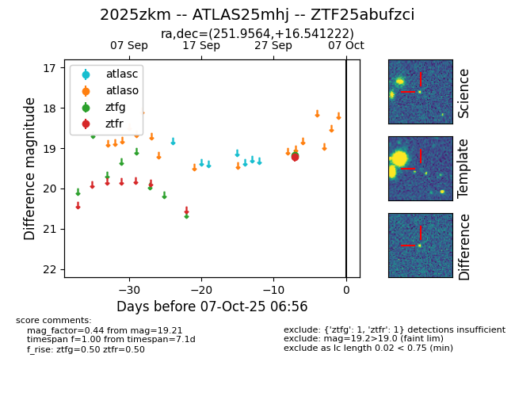

FINK: ZTF25abufzci
Lasair: ZTF25abufzci
ALeRCE: ZTF25abufzci
TNS: 2025zkm
YSE: 2025zkm
ZTF25abufzci (ztf,fink)
2025zkm (tns,yse)
ATLAS25mhj (atlas)
equatorial (ra, dec) = (251.9564,+16.54122)
galactic (l, b) = (34.9434,+34.61024)

last ztfg=19.17, ztfr=19.21
1 ztfg, 1 ztfr detections